Decision Trees
01. Geometric Intuition of Decision Tree: Axis-Parallel Hyperplanes
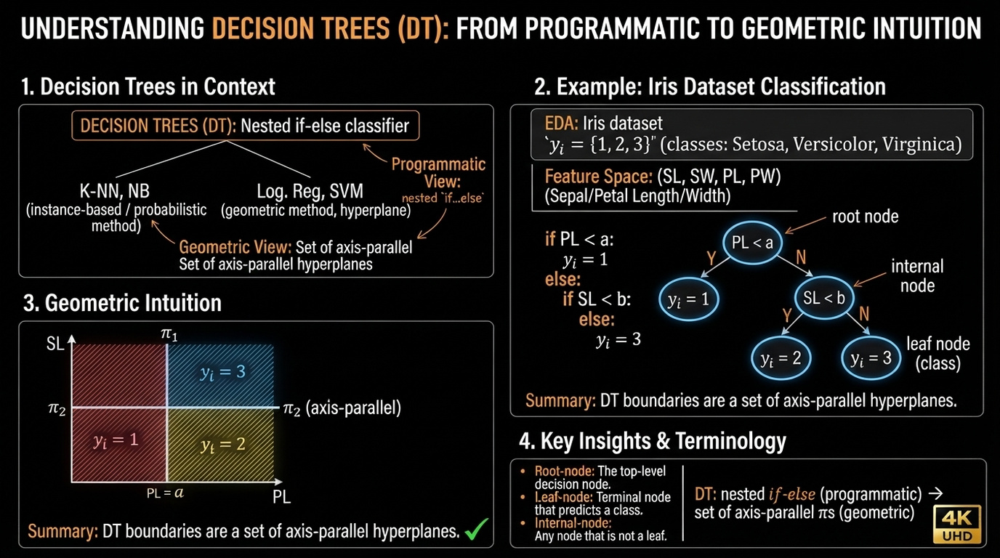
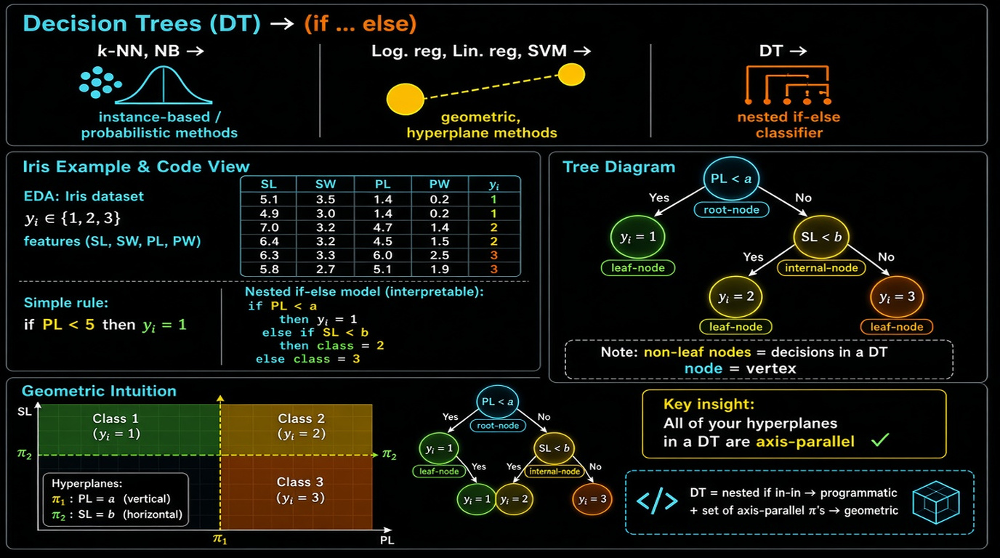
Decision Trees (DT)
Positioning among Classifiers
- $k$-NN, Naive Bayes → instance-based / probabilistic methods
- Logistic Regression, Linear Regression, SVM → geometric (hyperplane) methods
-
Decision Trees → nested
if … elseclassifier (programmatic)
A Decision Tree is simply a nested if-else classifier.
Example: Iris Dataset (EDA)
Features:
$\mathbf{x}_i = \langle SL, SW, PL, PW \rangle$
Labels: $y_i \in {1,2,3}$
Simple rule:
if PL < 5 then y_i = 1
Nested if-else (the actual model):
if PL < a then
y_i = 1
else
if SL < b then
class = 2
else
class = 3
This nested structure is drawn as a tree.
Tree Terminology
- Root-node – the first decision
- Internal-node – any non-leaf decision node
- Leaf-node – terminal node that outputs a class label
Non-leaf nodes = decisions in a DT.
(Node = vertex)
Geometric Intuition
A Decision Tree is a set of axis-parallel hyperplanes.
- Every split is of the form “feature $j$ ≤ threshold”.
- All decision boundaries are parallel to the coordinate axes.
Example (Iris):
- First split: $PL < a$ (vertical line)
- Second split: $SL < b$ (horizontal line)
Regions:
- $y_i=1$ on one side of the first plane
- $y_i=2$ and $y_i=3$ on the other side, separated by the second plane
Two Equivalent Views of a DT
- Programmatic view – nested if-else statements
- Geometric view – set of axis-parallel hyperplanes
02. Sample Decision Tree
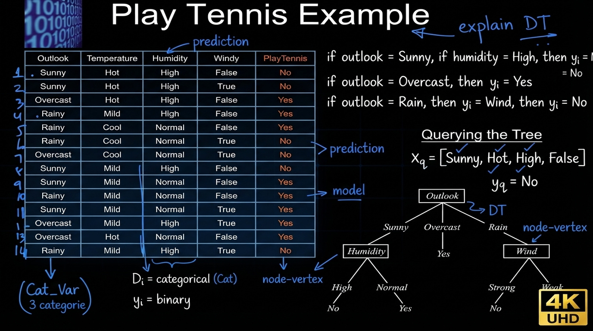
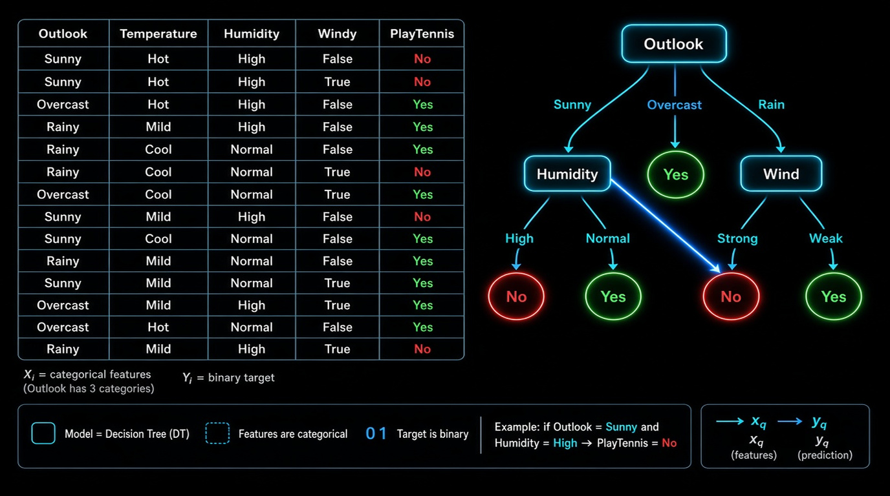
Play Tennis Example (Classic Decision-Tree Illustration)
Dataset
| Outlook | Temperature | Humidity | Windy | PlayTennis |
|---|---|---|---|---|
| Sunny | Hot | High | False | No |
| Sunny | Hot | High | True | No |
| Overcast | Hot | High | False | Yes |
| Rainy | Mild | High | False | Yes |
| Rainy | Cool | Normal | False | Yes |
| Rainy | Cool | Normal | True | No |
| Overcast | Cool | Normal | True | Yes |
| Sunny | Mild | High | False | No |
| Sunny | Cool | Normal | False | Yes |
| Rainy | Mild | Normal | False | Yes |
| Sunny | Mild | Normal | True | Yes |
| Overcast | Mild | High | True | Yes |
| Overcast | Hot | Normal | False | Yes |
| Rainy | Mild | High | True | No |
- All features are categorical.
- Outlook has 3 categories; the target PlayTennis is binary (Yes/No).
Decision Tree (the model)
Outlook
├── Sunny → Humidity
│ ├── High → No
│ └── Normal → Yes
├── Overcast → Yes
└── Rain → Wind
├── Strong → No
└── Weak → Yes
How the Tree Classifies a Query Point
Example query:
$\mathbf{x}_q = [\text{Sunny},\ \text{Hot},\ \text{High},\ \text{True}]$
- Root test: Outlook = Sunny → go left
- Humidity = High → leaf “No”
$$ y_q = \text{No} $$
The tree is simply a nested if-else:
if Outlook == Sunny then
if Humidity == High then No
else Yes
else if Outlook == Overcast then Yes
else // Rain
if Wind == Strong then No
else Yes
This is the classic “Play Tennis” Decision Tree used to explain how a DT works.
03. Building a Decision Tree: Entropy
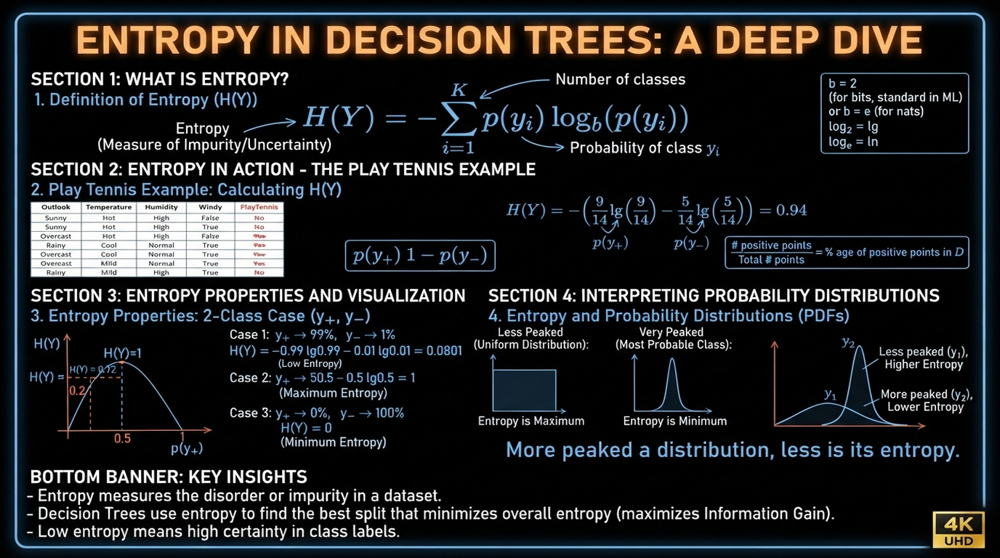
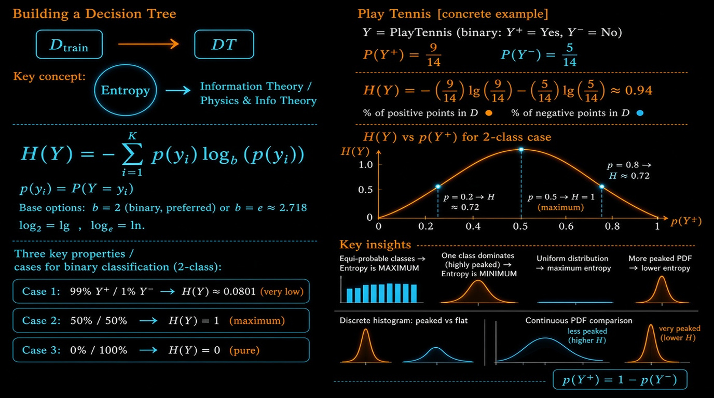
Building a Decision Tree: Entropy
From Training Data to Tree
$$ D_{\text{train}} ;\longrightarrow; \text{DT} $$
The key quantity used to build the tree is Entropy (from Information Theory / Physics).
Definition of Entropy
Let $Y$ be a discrete random variable that takes values $y_1,y_2,\dots,y_K$.
$$ H(Y) = -\sum_{i=1}^{K} p(y_i),\log_b\bigl(p(y_i)\bigr) $$
- $p(y_i) = P(Y=y_i)$
-
Base $b=2$ (bits) or $b=e$ (nats).
In ML we almost always use $\log_2$ (written $\lg$).
Play-Tennis Example
$Y =$ PlayTennis
- 9 positive examples → $P(Y_+)=\dfrac{9}{14}$
- 5 negative examples → $P(Y_-)=\dfrac{5}{14}$
$$ H(Y) = -\frac{9}{14}\lg\frac{9}{14} -\frac{5}{14}\lg\frac{5}{14} \approx 0.94 $$
Properties of Entropy (2-class case)
Case 1 – almost pure
$P(Y_+)=0.99$, $P(Y_-)=0.01$
$$ H(Y)\approx 0.0801 \quad\text{(very small)} $$
Case 2 – balanced
$P(Y_+)=P(Y_-)=0.5$
$$ H(Y)=1 \quad\text{(maximum)} $$
Case 3 – completely pure
$P(Y_+)=0$ or $1$
$$ H(Y)=0 $$
Entropy Curve (2-class)
$H(Y)$ reaches its maximum value of 1 when $P(Y_+)=0.5$ and falls to 0 at the extremes $P=0$ or $P=1$.
General Intuition
- When the distribution is equi-probable → entropy is maximum.
- When the distribution is highly peaked (one class dominates) → entropy is minimum.
More peaked a distribution is, the smaller its entropy.
04. Building a Decision Tree: Information Gain
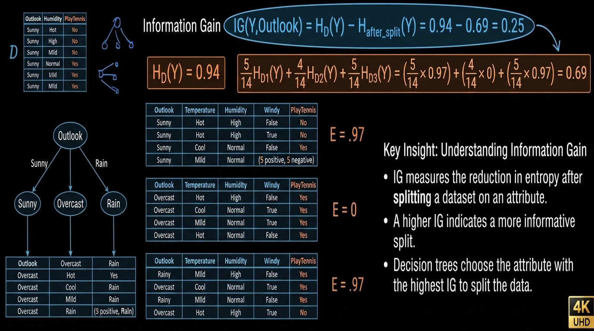
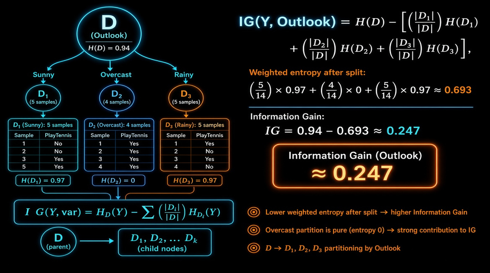
Partitioning the Data Set – Information Gain (IG)
Splitting on Outlook
Original data $D$ ($|D|=14$):
$$ H_D(Y) \approx 0.94 $$
After splitting on Outlook we obtain three subsets:
| Subset | Size | Entropy |
|---|---|---|
| $D_1$ (Sunny) | 5 | $H_{D_1}(Y)\approx 0.97$ |
| $D_2$ (Overcast) | 4 | $H_{D_2}(Y)=0$ |
| $D_3$ (Rainy) | 5 | $H_{D_3}(Y)\approx 0.97$ |
Weighted Average Entropy after the Split
$$ \begin{align*} \text{Weighted Entropy} &= \frac{|D_1|}{|D|}H_{D_1}(Y)
- \frac{|D_2|}{|D|}H_{D_2}(Y)
- \frac{|D_3|}{|D|}H_{D_3}(Y) \[6pt] &= \frac{5}{14}\cdot 0.97
- \frac{4}{14}\cdot 0
- \frac{5}{14}\cdot 0.97 \approx 0.69 \end{align*} $$
(The slide also shows the un-weighted average $\approx 0.64$.)
Information Gain
$$ \begin{align*} IG(Y,\text{Outlook}) &= H_D(Y) - \text{Weighted Entropy after split} \[4pt] &= 0.94 - 0.69 \approx 0.25 \end{align*} $$
(The handwritten calculation on the board writes it in the opposite order, but the definition is parent entropy minus child weighted entropy.)
General Formula
When a feature (var) partitions $D$ into subsets $D_1,D_2,\dots,D_K$:
$$ IG(Y,\text{var}) = H_D(Y)
\sum_{i=1}^{K}\frac{|D_i|}{|D|},H_{D_i}(Y) $$
Parent node = $D$
Child nodes = $D_1,D_2,\dots,D_K$
Information Gain measures how much uncertainty about $Y$ is reduced by knowing the value of the feature.
05. Building a Decision Tree: Gini Impurity
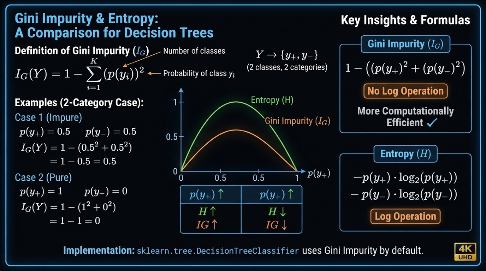
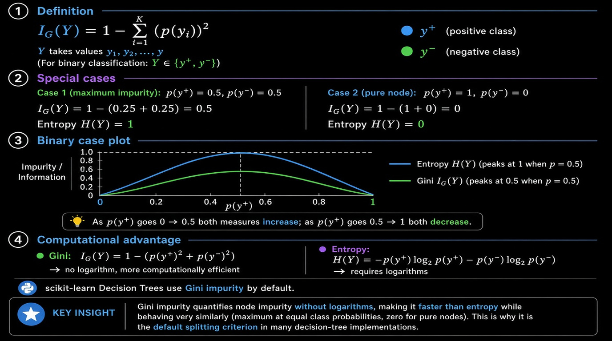
Gini Impurity
Gini Impurity is very similar to Entropy and is used as an alternative impurity measure when building Decision Trees.
Definition
For a discrete random variable $Y$ that takes values $y_1,y_2,\dots,y_K$:
$$ I_G(Y) = 1 - \sum_{i=1}^{K}\bigl(p(y_i)\bigr)^2 $$
Two-class Case ($Y_+$, $Y_-$)
Case 1 – balanced
$p(Y_+)=0.5$, $p(Y_-)=0.5$
$$ I_G(Y) = 1 - (0.25+0.25) = 0.5 $$
(Entropy $H(Y)=1$)
Case 2 – pure
$p(Y_+)=1$, $p(Y_-)=0$
$$ I_G(Y) = 1 - (1+0) = 0 $$
(Entropy $H(Y)=0$)
Comparison of the Two Curves (2-class)
Both Entropy and Gini Impurity:
- reach their maximum at $p(Y_+)=0.5$
- fall to 0 at the pure extremes $p=0$ or $p=1$
Gini is a smoother, slightly flatter curve than Entropy.
Computational Advantage
Gini Impurity needs no logarithm:
$$ I_G(Y) = 1 - \bigl(p(Y_+)^2 + p(Y_-)^2\bigr) $$
Entropy needs a log:
$$ H(Y) = -p(Y_+)\log_2 p(Y_+) - p(Y_-)\log_2 p(Y_-) $$
→ Gini is more computationally efficient.
scikit-learn Decision Trees use Gini Impurity by default.
06. Building a Decision Tree: Constructing a DT
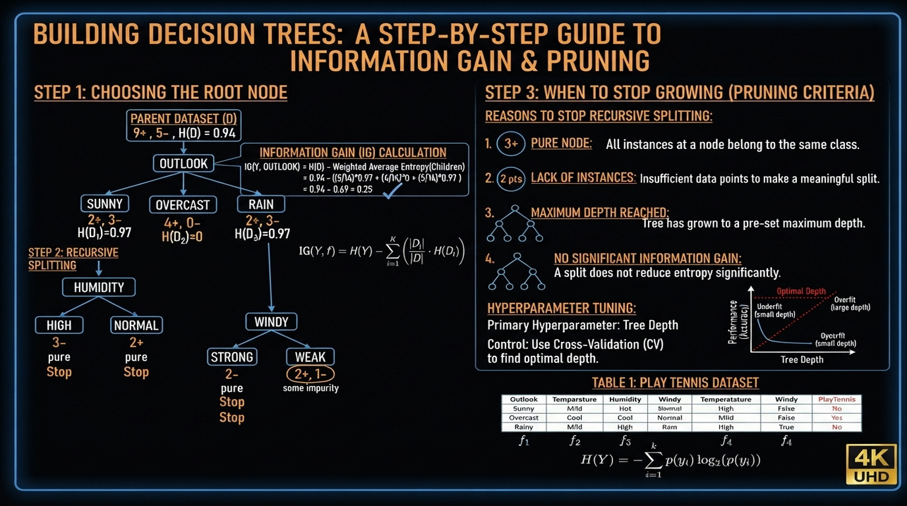
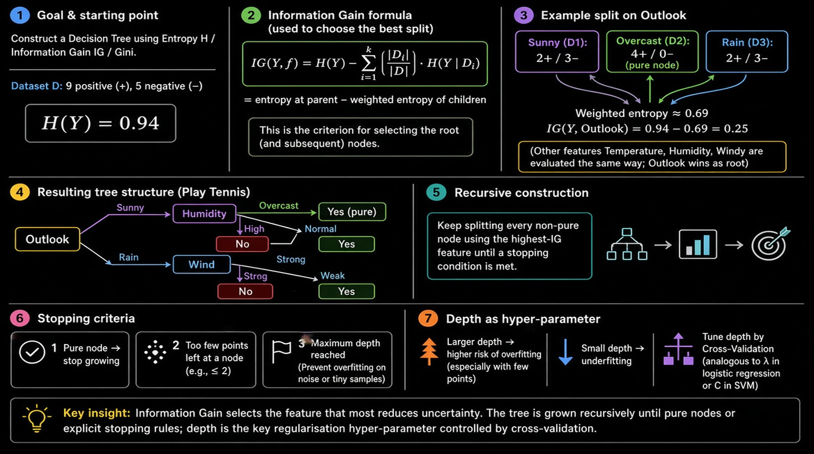
Constructing a Decision Tree
We use Entropy $H$, Information Gain $IG$, or Gini Impurity $I_G$.
Step-by-step on Play-Tennis Data
-
Original data $D$: 9 positive, 5 negative
$$H_D(Y)\approx 0.94$$ -
Compute Information Gain for every feature and choose the best split (root node).
- $IG(Y,\text{Outlook})=0.25$ (highest)
- $IG(Y,\text{Temperature})$, $IG(Y,\text{Humidity})$, $IG(Y,\text{Windy})$ are smaller.
→ Root node = Outlook
-
After the split we obtain three child nodes:
- Sunny ($D_1$): 2+, 3−
- Overcast ($D_2$): 4+, 0− → pure node (stop)
- Rainy ($D_3$): 2+, 3−
-
Recursively split the non-pure nodes using the same IG criterion
(Humidity on the Sunny branch, Wind on the Rainy branch, …).
General Formula (choosing any node)
$$ IG(Y,f) = H_D(Y)
- \sum_{i}\frac{|D_i|}{|D|},H_{D_i}(Y) $$
= entropy at parent − weighted entropy at children.
Stopping Criteria (when to stop growing a node)
- The node is pure (all examples have the same class).
- There are too few points left at the node.
- The tree has already become too deep.
Growing further on very few (or noisy) points leads to overfitting.
Depth as Hyper-parameter
- Larger depth → higher chance of overfitting (especially when leaves contain few points).
- Very small depth → underfitting.
Depth is therefore a hyper-parameter of a Decision Tree (analogous to $\lambda$ in logistic regression or $C$ in SVM) and is chosen by cross-validation.
07. Building a Decision Tree: Splitting Numerical Features
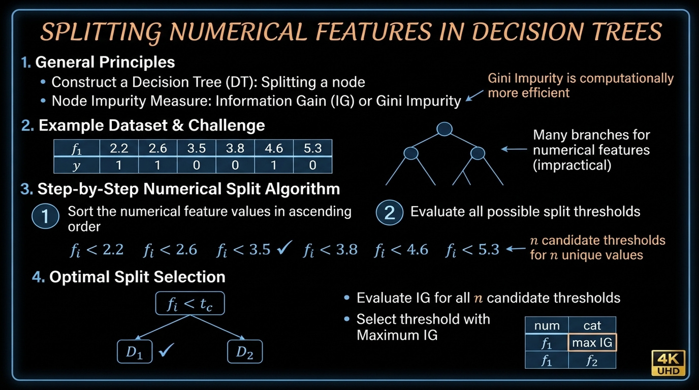
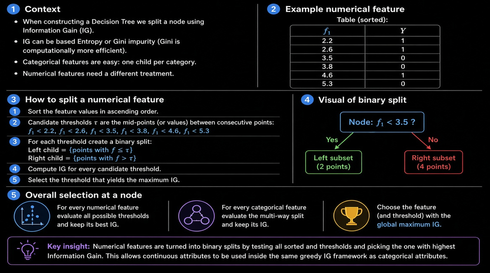
Splitting Numerical Features
When constructing a Decision Tree we split a node by maximising Information Gain (or
Gini impurity).
So far we have only seen categorical features. Now we handle
numerical features.
Numerical Feature
A feature $f_1$ can be integer-valued or real-valued.
Example data:
| $f_1$ | $Y$ |
|---|---|
| 2.2 | 1 |
| 2.6 | 1 |
| 3.5 | 0 |
| 3.8 | 0 |
| 4.6 | 1 |
| 5.3 | 0 |
How to Generate Candidate Splits
- Sort the numerical feature in ascending order.
- Consider every possible threshold that lies between consecutive distinct values:
$$ \begin{align*} f_1 &< 2.2 \ f_1 &< 2.6 \ f_1 &< 3.5 \ f_1 &< 3.8 \ f_1 &< 4.6 \ f_1 &< 5.3 \end{align*} $$
Each of these thresholds produces a binary split of the current node into two child sets $D_1$ and $D_2$.
Choosing the Best Split
- For every candidate threshold compute the Information Gain (or Gini).
- Select the threshold that gives the maximum IG.
- That threshold becomes the decision at the current node:
$$ \text{if } f_1 < t^* \quad\text{then go left, else go right.} $$
Summary
- Categorical feature → one branch per category.
- Numerical feature → many candidate binary thresholds; pick the one with highest Information Gain.
This is how a Decision Tree handles mixed (categorical + numerical) data.
08. Feature Standardization
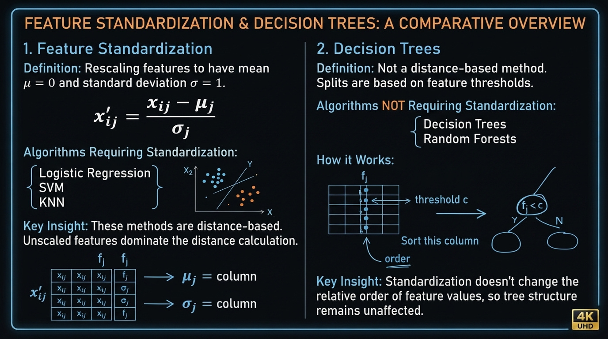
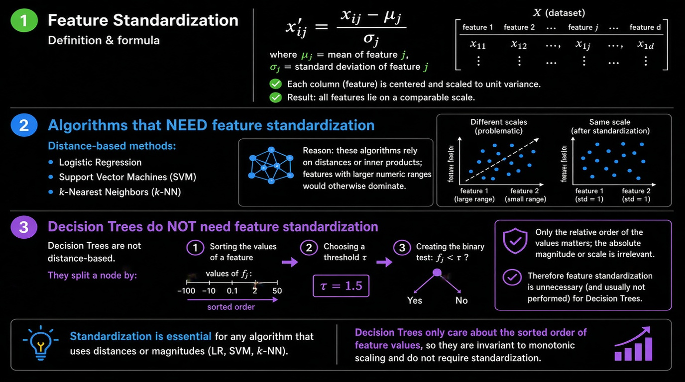
Feature Standardization
Distance-based Methods Need Standardization
Models that rely on distances require feature standardization:
- Logistic Regression
- SVM
- $k$-NN
For every feature $j$:
$$ x_{ij}' = \frac{x_{ij}-\mu_j}{\sigma_j} $$
where $\mu_j$ and $\sigma_j$ are the mean and standard deviation of column $j$.
Decision Trees Do Not Need Feature Standardization
A Decision Tree is not a distance-based method.
- At each node we only sort a single column and pick a threshold $t$.
- The split is of the form
$$ \text{if } f_j < t \quad\text{then left, else right.} $$
- Because we only look at the order of the values (not their absolute magnitudes or distances), scaling or centering the features does not change the ordering and therefore does not change the tree.
Conclusion
Feature standardization is unnecessary (and has no effect) for Decision Trees.
09. Building a Decision Tree: Categorical Features with Many Possible Values
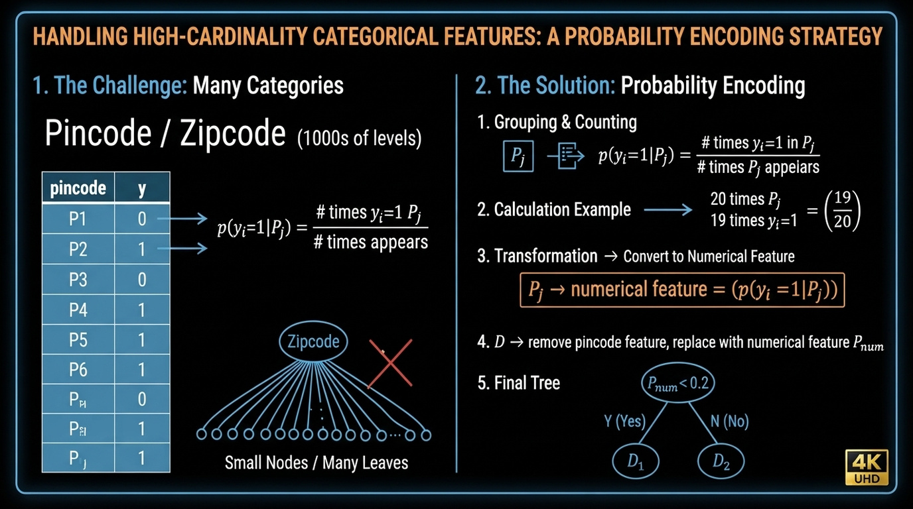
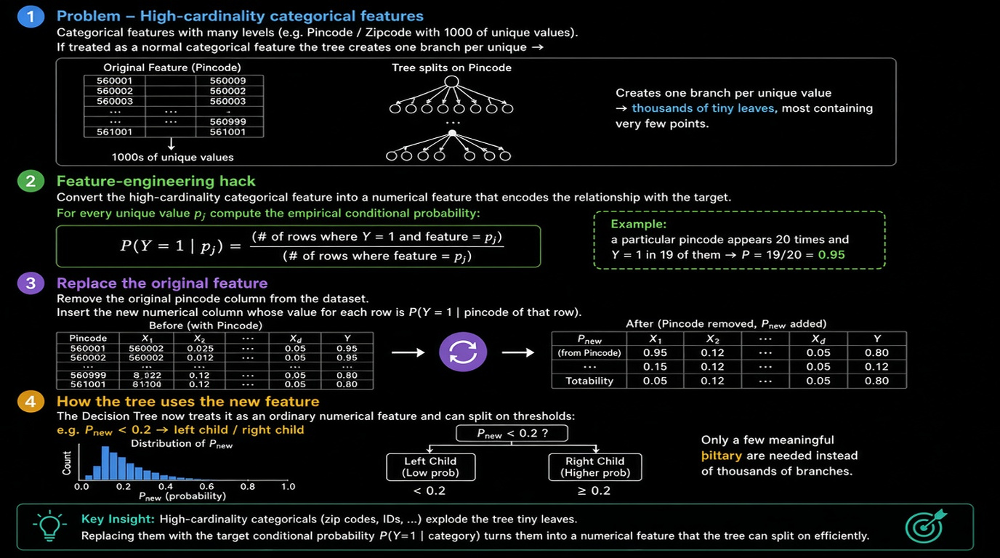
Categorical Features with Many Categories (High Cardinality)
The Problem
Features such as Pincode / Zipcode can have thousands of distinct levels (e.g. 10 000+).
If we treat them as ordinary categorical features:
- The tree creates one branch per unique value.
- Most child nodes become extremely small.
- The split is almost useless and leads to severe overfitting.
Feature-Engineering Hack
Convert the high-cardinality categorical feature into a numerical feature that carries useful signal.
For each pincode $p_j$ compute the empirical probability of the positive class:
$$ p_j ;\longmapsto; P(Y=1\mid p_j) = \frac{#{y_i=1 ;\text{and}; p_i=p_j}}{#{p_i=p_j}} $$
Example: a particular pincode appears 20 times and 19 of those times $y=1$
$$ P(Y=1\mid p_j)=\frac{19}{20}=0.95 $$
What We Do in Practice
- Remove the original pincode column from $D$.
-
Replace it by the new numerical column
$$ \text{numerical feature} = P(Y=1\mid\text{pincode}) $$ - Now the Decision Tree can split on this numerical feature in the usual way (threshold splits).
Resulting Tree Behaviour
Instead of creating thousands of tiny pure leaves, the tree makes a few meaningful binary splits such as
$$ \text{if } P(Y=1\mid\text{pincode}) < 0.2 \quad\text{then left, else right.} $$
This keeps the tree compact and statistically reliable.
10. Overfitting and Underfitting
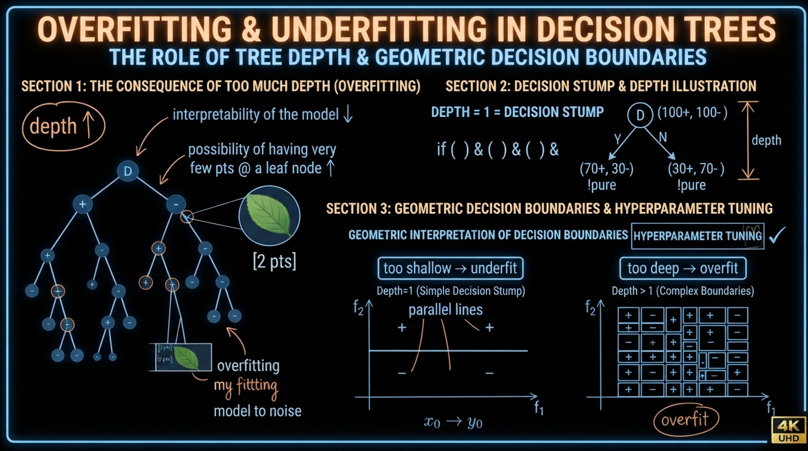
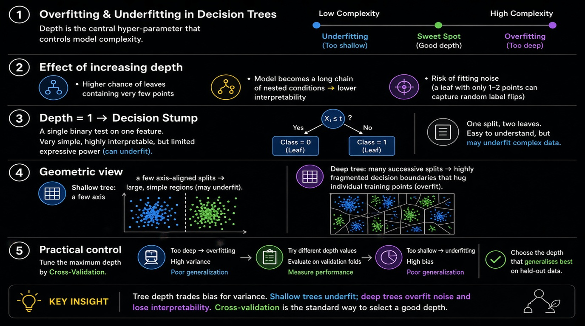
Overfitting & Underfitting in Decision Trees
Effect of Depth
-
As depth increases:
- Possibility of having very few points at a leaf node increases.
- Interpretability of the model decreases (long nested if-else chains).
- The model starts fitting noise → overfitting.
-
Depth = 1 is called a Decision Stump
(only one split, two leaves).
Geometric View
- Axis-parallel splits.
- Too deep → many tiny rectangular regions that capture noise → overfitting.
- Too shallow → under-fitting (the decision boundary is too coarse).
Controlling Depth
Depth is the main hyper-parameter of a Decision Tree.
It is chosen by cross-validation (exactly like $\lambda$ in logistic
regression or $C$ in SVM).
Summary
| Depth | Behaviour |
|---|---|
| too large | overfitting |
| too small | underfitting |
| chosen by CV | good bias-variance trade-off |
11. Train and Run Time Complexity
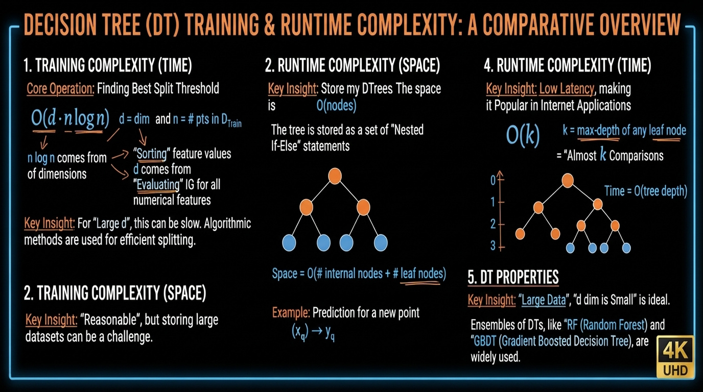
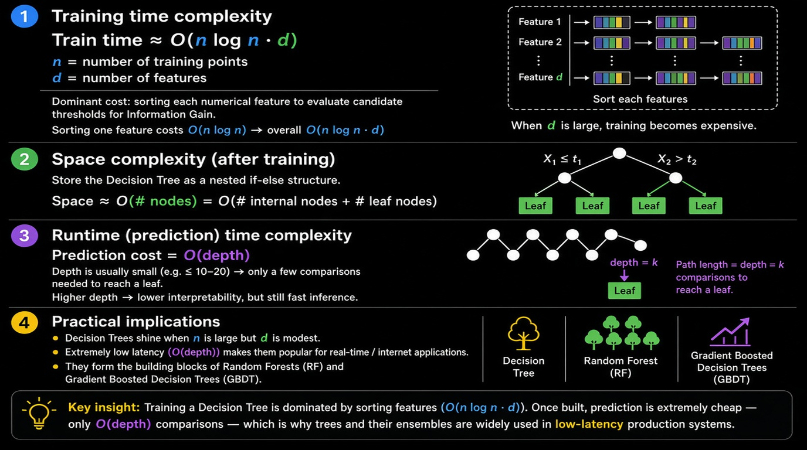
Train & Run-time Complexity of Decision Trees
Training Time Complexity
$$ \text{Train time} ;\sim; O\bigl(n\log n\cdot d\bigr) $$
- $n$ = number of training points
- $d$ = dimensionality
Dominant cost comes from sorting each numerical feature (needed to evaluate candidate thresholds for Information Gain / Gini).
For large $d$ the complexity becomes $O(n\log n\cdot d)$.
Space Complexity (after training)
We only need to store the tree:
- number of internal nodes + number of leaf nodes
- essentially a nested if-else structure
Space is proportional to the number of nodes in the tree.
Run-time (Prediction) Complexity
To classify a query point $\mathbf{x}_q$ we simply walk from the root down to a leaf.
$$ \text{Prediction time} = O(\text{depth}) $$
- At most a few comparisons (one per level).
- Extremely fast → low-latency prediction.
Example: a tree of depth 3 needs at most 3 comparisons.
Practical Implications
Decision Trees (and their ensembles RF / GBDT) are very popular in internet applications because:
- They handle large data when dimensionality is not huge.
- Prediction latency is $O(\text{depth})$ – excellent for real-time systems.
12. Regression Using Decision Trees
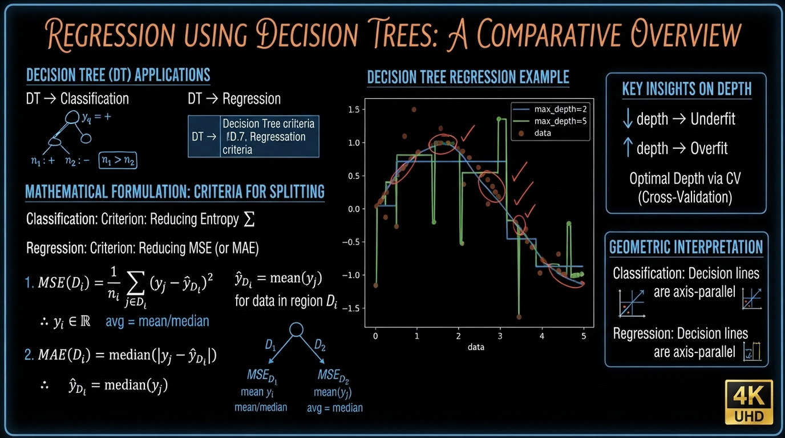
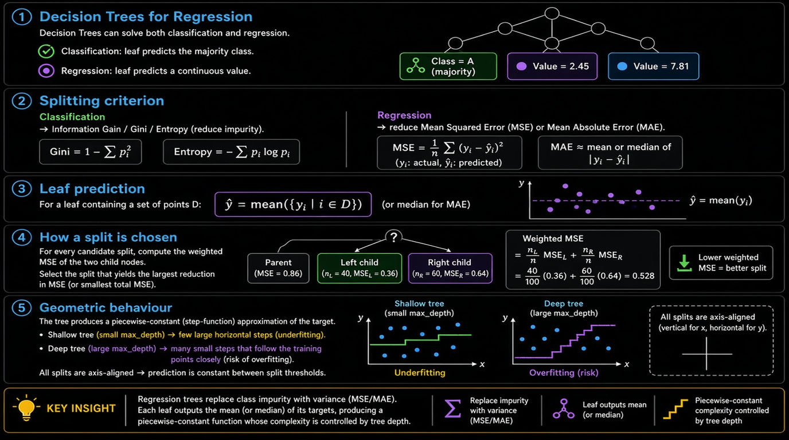
Regression using Decision Trees
Decision Trees can be used for both classification and regression.
Classification vs Regression
| Task | Splitting Criterion | Value predicted at a leaf |
|---|---|---|
| Classification | Information Gain / Gini | Majority class (or class probabilities) |
| Regression | MSE or MAE | Mean (or median) of the target values |
Regression Criterion
We want to reduce the impurity of the real-valued targets $y_i\in\mathbb{R}$.
Mean Squared Error (MSE)
$$ \text{MSE} = \frac{1}{n}\sum_{i=1}^{n}(y_i-\hat{y}_i)^2 $$
Mean Absolute Error (MAE) (also called Mean Absolute Deviation)
$$ \text{MAE} = \text{median}\bigl(|y_i-\hat{y}_i|\bigr) $$
When we split a node into two children $D_1$ and $D_2$, we choose the split that minimises the weighted MSE (or MAE):
$$ w_1\cdot\text{MSE}{D_1} + w_2\cdot\text{MSE}{D_2} $$
Prediction at a Leaf
For a leaf node that contains the set of points $D$:
$$ \hat{y} = \text{mean}(y_i){i\in D} \quad\text{or}\quad \hat{y} = \text{median}(y_i){i\in D} $$
Geometric View
- Classification → axis-parallel hyperplanes that separate class regions.
- Regression → axis-parallel piece-wise constant function (step function).
Effect of Depth (same as classification)
- Small depth → under-fitting (coarse step function).
- Large depth → over-fitting (very wiggly step function that follows noise).
The plots illustrate this clearly:
max_depth=2→ smooth, coarse approximation.-
max_depth=5→ much more detailed (and potentially over-fit) step function.
Depth is again chosen by cross-validation.
13. Cases
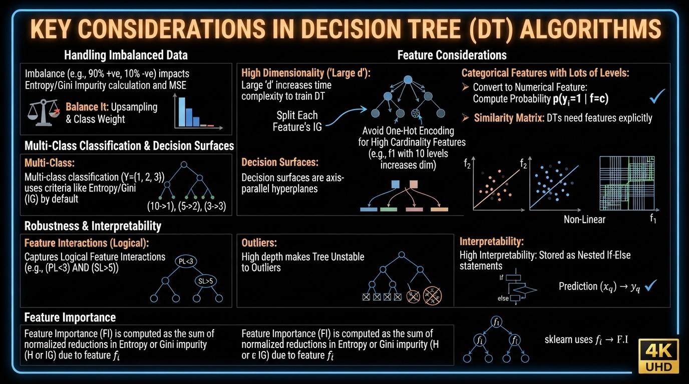
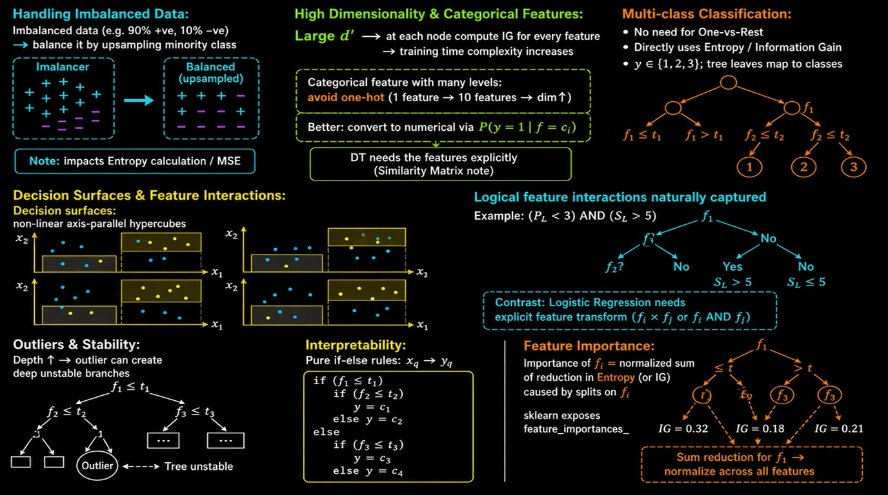
Cases: Decision Trees
1. Imbalanced Data
- Highly imbalanced data (e.g. 90% +ve, 10% –ve) impacts Entropy / MSE calculations.
-
Solution: balance the data
→ Upsampling the minority class
→ or class-weighting / downsampling.
2. Large Dimensionality ($d$ large)
- At every node we evaluate Information Gain for every feature.
- Training-time complexity increases significantly.
-
For categorical features: avoid one-hot encoding (it explodes
dimensionality).
Example: 1 categorical feature with 10 levels → 10 binary features → $d$ increases.
3. Categorical Features with Many Levels
- Convert high-cardinality categorical feature into a numerical feature:
$$ P(Y=1 \mid f = c_i) $$
- Decision Trees need the features explicitly (they do not work with a similarity / kernel matrix).
4. Multi-class Classification
- Decision Trees handle multi-class naturally (no OvR needed).
- Entropy / Gini Impurity work directly with $Y = {1,2,3,\dots}$.
- At a leaf the prediction is the majority class (or class distribution).
5. Decision Surfaces
- Non-linear.
- Composed of axis-parallel hyperplanes (piece-wise constant regions).
6. Feature Interactions (Logical)
-
Trees naturally capture interactions of the form
$$ (PL < 3) ;\text{AND}; (SL > 5) $$ - Contrast with Logistic Regression / Feature Transforms where we must manually create $f_i\times f_j$ or $f_i \land f_j$.
7. Outliers
- When depth is large, outliers can create small pure leaves.
- This makes the tree unstable.
- Controlling depth (or min-samples-leaf) mitigates the effect.
8. Interpretability
-
Extremely high: the model is simply a nested if-else rule set.
$$ \mathbf{x}_q ;\longrightarrow; y_q $$
9. Feature Importance
- For each feature $f_i$ we accumulate the total reduction in impurity (Entropy or Gini) caused by splits on $f_i$.
- These reductions are normalised to obtain Feature Importance scores.
- Scikit-learn exposes them as
feature_importances_.
14. Code Samples
https://scikit-learn.org/stable/modules/tree.html
https://scikit-learn.org/stable/modules/generated/sklearn.tree.DecisionTreeClassifier.html
https://scikit-learn.org/stable/auto_examples/tree/plot_unveil_tree_structure.html
15. Assignment-8: Apply Decision Trees
16. Revision Questions
Questions
1. How to Building a decision Tree?
2. What is Entropy?
3. What is information Gain?
4. What is Gini Impurity?
5. How to Constructing a DT?
6. Importance of Splitting numerical features?
7. How to handle Overfitting and Underfitting in DT?
8. What are Train and Run time complexity for DT?
9. How to implement Regression using Decision Trees?
1. How to Building a decision Tree?
A Decision Tree is built by recursively partitioning the data using axis-parallel hyperplanes.
Geometric Intuition:
- Each internal node represents a decision based on one feature
- The split is always parallel to one of the axes (e.g., $ x_j \leq threshold $)
- The tree divides the feature space into rectangular regions
- Each leaf corresponds to one region and makes a prediction (majority class or average value)
High-level process:
- Start with the entire dataset at the root
- Choose the best feature and split point that maximizes purity
- Recursively repeat the process on the child nodes
- Stop when a stopping criterion is met (pure node, max depth, min samples, etc.)
2. What is Entropy?
Entropy measures the impurity or uncertainty in a set of labels.
For a binary classification problem with proportions $ p $ (positive) and $ 1-p $ (negative):
$ H(S) = -p \log_2(p) - (1-p)\log_2(1-p) $
Properties:
- Entropy = 0 when the set is pure (all examples belong to one class)
- Entropy is maximum (= 1 for binary) when classes are equally distributed
- Higher entropy → more impurity → harder to classify
Entropy is the basis for the Information Gain criterion used in ID3 / C4.5 style decision trees.
3. What is information Gain?
Information Gain measures how much uncertainty is reduced after splitting on a feature.
$ \text{Information Gain}(S, A) = H(S) - \sum_{v \in Values(A)} \frac{|S_v|}{|S|} H(S_v) $
where:
- $ H(S) $ = entropy of the parent node
- $ S_v $ = subset of data where feature $ A $ takes value $ v $
Interpretation:
- Higher Information Gain → better feature for splitting
- We choose the feature that gives the maximum Information Gain at each node
Information Gain tends to prefer features with many distinct values (can be biased). This is why Gain Ratio is sometimes used.
4. What is Gini Impurity?
Gini Impurity is another measure of node impurity, used in CART trees.
For a node with class proportions $ p_k $:
$ \text{Gini}(S) = 1 - \sum_{k} p_k^2 $
Properties:
- Gini = 0 when the node is pure
- Gini is maximum when classes are equally mixed
- Computationally cheaper than Entropy (no logarithms)
Gini Gain (used for splitting):
$ \text{Gini Gain} = \text{Gini}(parent) - \sum \frac{|S_v|}{|S|} \text{Gini}(S_v) $
CART uses Gini Impurity by default, while ID3/C4.5 use Entropy / Information Gain.
5. How to Constructing a DT?
Step-by-step construction:
- Start with the full training set at the root
-
For each possible feature:
- Evaluate all possible split points
- Compute Information Gain or Gini Gain
- Select the feature + threshold with the highest gain
- Create two (or more) child nodes
- Recursively repeat the process on each child
-
Stopping criteria (any of these):
- Node is pure
- Maximum depth reached
- Minimum number of samples in a node
- Minimum gain threshold
- No more features left
The final tree consists of decision nodes and leaf nodes (predictions).
6. Importance of Splitting numerical features?
Numerical features are continuous, so we cannot split on every unique value efficiently.
How splitting is done:
- Sort the feature values
- Consider possible thresholds between consecutive values
- For each threshold, compute the impurity reduction (Information Gain or Gini Gain)
- Choose the threshold that gives the best gain
Importance:
- Good split points on numerical features can create very pure child nodes
- Axis-parallel splits on numerical features are the main way decision trees partition continuous space
- Efficient algorithms (e.g., sorting once) make this feasible
Without careful handling of numerical features, trees would either be too coarse or computationally expensive.
7. How to handle Overfitting and Underfitting in DT?
Decision Trees are prone to overfitting because they can keep growing until every leaf is pure.
Overfitting solutions:
- Pre-pruning: Stop growing early using max_depth, min_samples_split, min_samples_leaf, min_impurity_decrease
- Post-pruning: Grow a full tree and then prune back (cost-complexity pruning)
- Limit maximum number of leaf nodes
- Use ensemble methods (Random Forest, Gradient Boosting)
Underfitting solutions:
- Allow the tree to grow deeper
- Reduce min_samples_split / min_samples_leaf
- Decrease regularization strength
The most common practical approach is to use cross-validation to tune max_depth and min_samples_leaf.
8. What are Train and Run time complexity for DT?
Training Time Complexity:
-
Roughly $ O(n \cdot d \cdot \log n) $ for balanced trees
- $ n $ = number of samples
- $ d $ = number of features
- In the worst case (very unbalanced) it can be higher
- Sorting numerical features dominates the cost
Prediction (Run-time) Complexity:
- $ O(depth) $ which is typically $ O(\log n) $ for balanced trees
- Very fast at inference time
Space Complexity:
- $ O(number\ of\ nodes) $ which is usually $ O(n) $ in the worst case
Decision Trees are relatively fast to train on medium-sized datasets and extremely fast at prediction.
9. How to implement Regression using Decision Trees?
Decision Tree Regressor works almost the same way as the classifier, with two key differences:
-
Impurity measure:
- Instead of Entropy or Gini, we use variance (or mean squared error)
- Variance of a node: $ \frac{1}{|S|} \sum (y_i - \bar{y})^2 $
-
Prediction at leaf:
- Instead of majority class, the leaf predicts the average of the target values in that leaf
Splitting criterion:
- Choose the split that minimizes the weighted variance of the child nodes
Advantages:
- Can model non-linear relationships
- Handles mixed feature types
- No need for feature scaling
Disadvantages:
- Still prone to overfitting
- Predictions are piecewise constant (staircase-like)